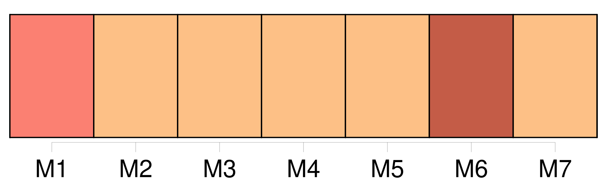

Longueur nb maillons : 15 mentions |
 |
Puis, s'adressant à [d'autres] [qui] n'étaient presque jamais venues chez elle, elle poussait la malice jusqu'à [leur] dire en face et tout haut : [vous] faites comme moi, [vous] faites taire [vos] scrupules de conscience, et [vous] venez, malgré [vous] , rendre hommage au talent?? C'est toujours ainsi, voyez [-vous] ; l'esprit triomphe toujours, et de tout. [Vous] avez bien blâmé mademoiselle S …… de s'être mise au théâtre ; [vous] avez fait comme moi, [vous] avez trouvé cela révoltant, affreux!! [1 phrases] [vous] voilà [toutes] à ses pieds!!
[Vous] ne direz pas le contraire, car enfin je ne crois pas être devenue tout à coup assez aimable et assez jolie pour que l'on vienne en foule jouir de ma société. |
|
Il est possible de télécharger la ressource sur la page Ortolang |
Si vous avez des questions ou vous voyez des erreurs, merci d'envoyer un mail à silvia.federzoni89@gmail.com |